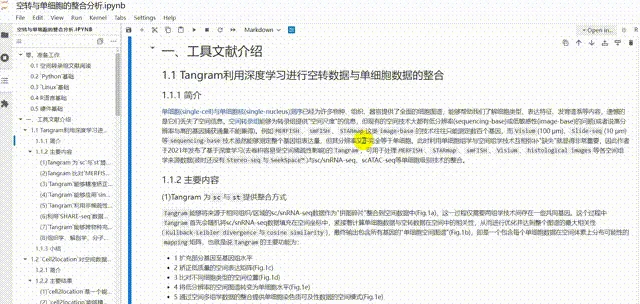
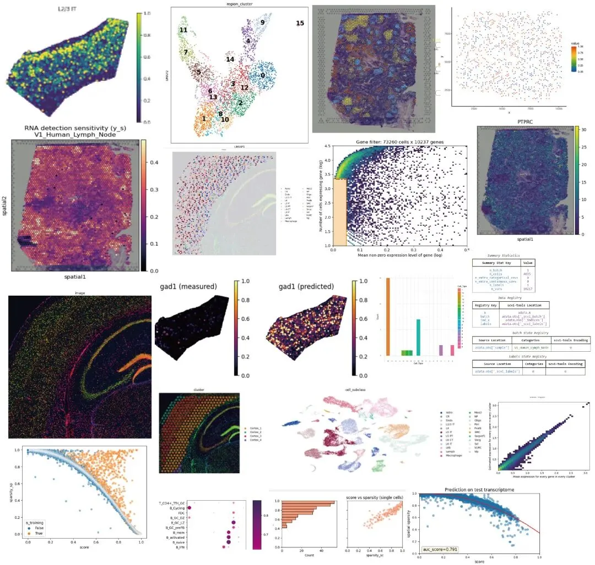
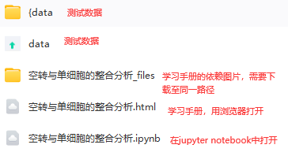
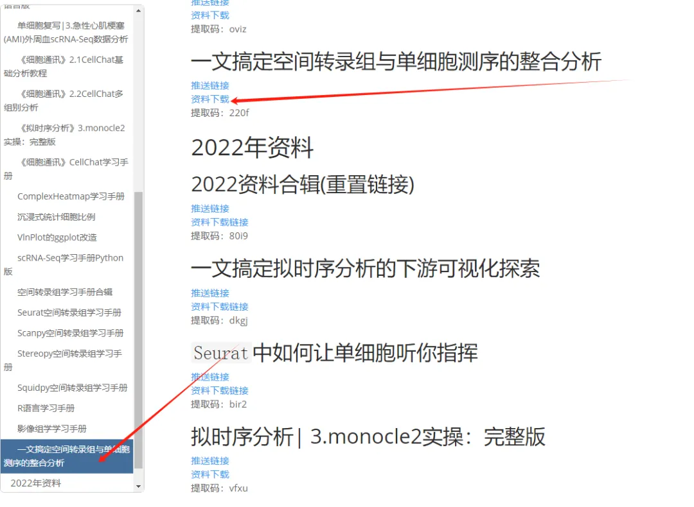

一文搞定空间转录组与单细胞测序的整合分析
原文：https://mp.weixin.qq.com/s?__biz=MzAwMzIzOTk5OQ==&mid=2247529485&idx=2&sn=441d93a7eb0db896b642a1e588945c4f&chksm=9b3c0d5dac4b844bf54bd050058d5d3859b147607fd02cf31334d9dc180bffe41ce5e8a0156c#rd 合集：空间转录组

学习手册

 近年来空间转录组 的各类平台层出不穷，其也被《Nature Methods》评为年度技术。但目前许多空转技术仍无法达到单细胞分辨率，因此需要单细胞数据辅助空转的分析，进行去卷积、注释、缺失值填补等操作。本文整理了Tangram(Python)、Cell2location(Python)、RCTD(R语言)三款软件的文献解读、测试代码、学习手册、测试文件和输出结果。希望这些资料可以帮助大家完成一站式学习。需要计算资源可点击：足够支持你完成硕博生涯的生信环境
近年来空间转录组 的各类平台层出不穷，其也被《Nature Methods》评为年度技术。但目前许多空转技术仍无法达到单细胞分辨率，因此需要单细胞数据辅助空转的分析，进行去卷积、注释、缺失值填补等操作。本文整理了Tangram(Python)、Cell2location(Python)、RCTD(R语言)三款软件的文献解读、测试代码、学习手册、测试文件和输出结果。希望这些资料可以帮助大家完成一站式学习。需要计算资源可点击：足够支持你完成硕博生涯的生信环境
本文分享的软件支持GPU加速，需要GPU算力的同学可参考：5090终于上架啦
也可以来找找组织：生信Linux交流群
计算资源不足的同学可参考： 生信分析为什么要使用服务器？ 足够支持你完成硕博生涯的生信环境 独享用户硬件升级对比报告
访问链接：https://biomamba.xiyoucloud.net/
-Biomamba

示例

分析输出图片示例：
联系客服获取下载链接
大家可以联系我们获领取下载链接，也欢迎考虑生信基地终身订阅学习手册相关文件目录：

本次资料在网址中的这里：

-Biomamba

如何联系我们

 留一个领取资料、免费两周学习版服务器的微信号[Biomamba_zhushou]，方便各位随时交流。同时我们也构建了交流群矩阵，欢迎大家入群讨论。
大家可以阅读完这几篇之后添加给生信入门初学者的小贴士
没有检索，就没有发言权
留一个领取资料、免费两周学习版服务器的微信号[Biomamba_zhushou]，方便各位随时交流。同时我们也构建了交流群矩阵，欢迎大家入群讨论。
大家可以阅读完这几篇之后添加给生信入门初学者的小贴士
没有检索，就没有发言权
已有生信基地联系方式的同学无需重复添加

 您点的每个赞和在看，我都认真当成了喜欢
您点的每个赞和在看，我都认真当成了喜欢